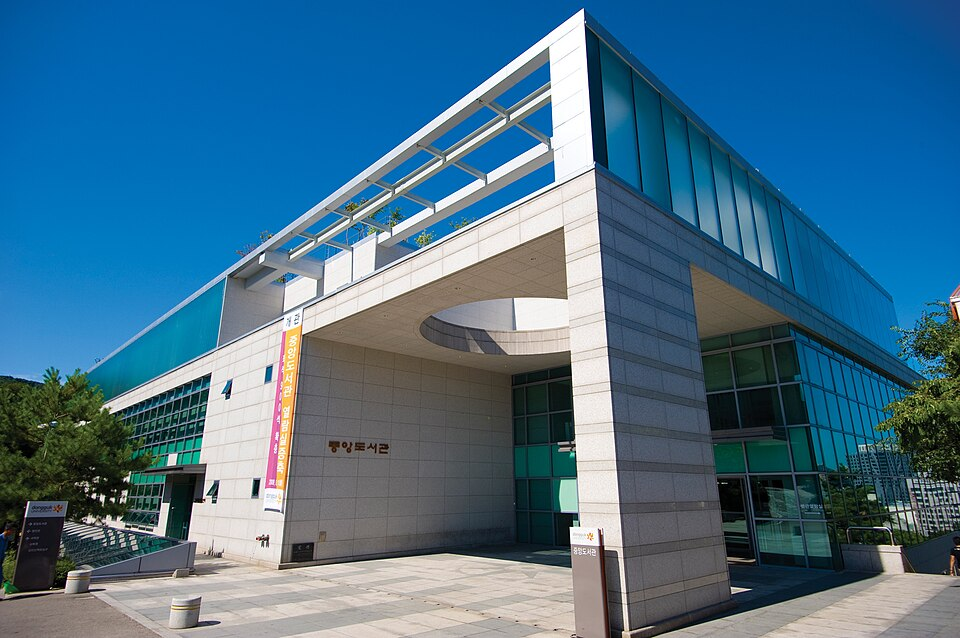

동국대학교 정시 표에서 눈에 띄는 숫자는 탐구 25%입니다. 인문계열을 기준으로 보면 탐구 두 과목이 수학 한 과목과 똑같은 무게입니다. 탐구를 "수능 끝나갈 때 몰아서 하는 과목"으로 미뤄 둔 학생에게는 뼈아픈 구조입니다. 이 글은 그 표를 그래서 어느 과목을 먼저로 바꿔 읽는 글입니다. 고3 국어과외에 시간을 얼마나 줄지 정하는 기준이 됩니다.
| 계열 | 국어 | 수학 | 영어 | 탐구 |
|---|---|---|---|---|
| 인문계열 | 35% | 25% | 15% | 25% |
| 자연계열 | 25% | 35% | 15% | 25% |
탐구는 두 과목을 응시해야 합니다. 한국사는 위 비율에 들어가지 않고 등급에 따라 감점으로 반영되며, 제2외국어·한문으로 탐구를 대체할 수는 없습니다.
주요 대학의 탐구 비중은 대체로 20% 안팎입니다. 동국대학교는 인문·자연 모두 25%입니다. 5%p 차이가 작아 보이지만, 계산해 보면 이야기가 달라집니다.
인문계열에서 탐구 25%는 수학 25%와 같습니다. 자연계열에서는 국어 25%와 같습니다. 즉 탐구 두 과목을 합친 무게가 주요 과목 하나와 동등합니다. 탐구 한 과목이 흔들리면 수학 절반이 흔들리는 것과 같은 크기의 손실이 납니다.
여기서 나오는 결론은 간단합니다. 탐구를 마지막 두 달에 몰아 넣지 않습니다. 고2 겨울에 과목을 정하고 개념을 한 바퀴 돌려 두면, 고3에는 기출과 오답 관리만 얹으면 됩니다. 반대로 9월에 시작하면 그때부터는 국어·수학 시간을 깎아서 탐구를 채워야 합니다.
영어는 인문·자연 모두 15%입니다. 10%인 대학보다는 무겁고 20%인 대학보다는 가볍습니다. 애매한 자리라서 오히려 판단이 필요합니다.
영어는 절대평가라 등급이 한 번 자리를 잡으면 크게 움직이지 않습니다. 그래서 지금 등급이 안정적이라면 유지에 필요한 최소 시간만 쓰고 남은 시간을 25%짜리 탐구와 35%짜리 주력 과목에 옮기는 편이 유리합니다. 반대로 등급이 불안정하게 오르내린다면 15%는 무시할 수 없는 크기이므로 먼저 안정시키는 것이 순서입니다. 등급별로 몇 점씩 반영되는지는 요강에서 확인하세요.
2027학년도 동국대학교 정시에서 달라진 점은 다군 일반전형에 학생부 평가가 들어온다는 것입니다. 가군과 나군은 수능 100%지만, 다군 일반전형은 수능 90% + 학생부 평가 10%로 뽑습니다.
정시를 "수능만 보는 전형"으로 알고 있던 학생에게는 확인이 필요한 변화입니다. 다만 10%가 전체를 뒤집는 크기는 아닙니다. 다군을 쓸 생각이라면 학교생활기록부를 한 번 열어 보고 지원 여부를 정하는 정도면 충분합니다. 평가 방식과 반영 항목은 요강에 나와 있으니 그대로 확인하시는 편이 정확합니다.
한국사는 반영비율 표에 없습니다. 대신 등급에 따라 총점에서 빼는 방식으로 들어옵니다. 잘 봐서 이득을 보는 영역이 아니라, 못 보면 손해를 보는 영역입니다. 목표는 감점 구간에 들어가지 않을 만큼만 확보해 두고 더 이상 시간을 쓰지 않는 것입니다. 감점 폭은 요강으로 확인하세요.
학생 수준에 맞는 선생님을 24시간 안에 추천해 드려요. 상담은 무료입니다.